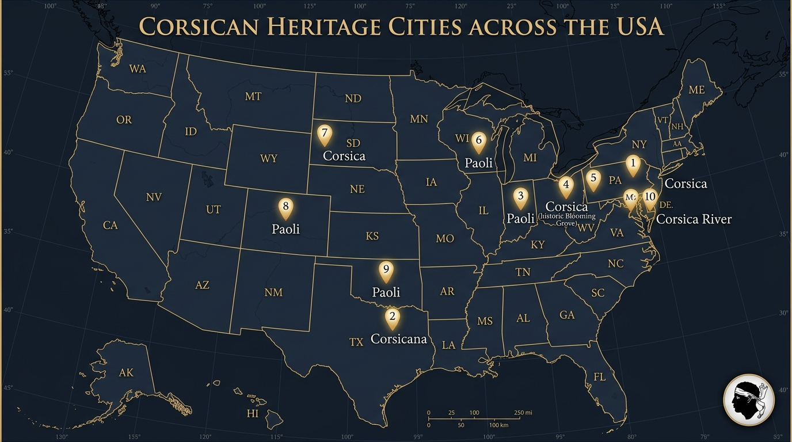

En clair pour votre foyer : On répète aux Corses depuis des générations qu'ils ne produiraient rien et vivraient sous « perfusion financière ». C'est un mensonge d'État. Notre terre produit assez d'électricité propre pour nous éclairer à bas coût, retient assez d'eau douce pour approvisionner toutes nos familles et notre agriculture, et possède des fonds marins capables de nourrir la population avec du poisson frais local. Ce manifeste rappelle aux grandes nations que la Corse n'est pas une colonie touristique soumise à la spéculation, mais le berceau de la première démocratie moderne qui a inspiré l'Amérique.
⚡ I. EXORDE : L'ADRESSE AUX CONSCIENCES DES HOMMES LIBRES
Lorsque, dans le cours tragique des siècles, une nation souveraine qui fut l’aînée et le phare du monde moderne se trouve menacée d’effacement silencieux sur le sol même de ses ancêtres, un devoir sacré de mémoire et un respect absolu envers la conscience universelle exigent qu'elle élève la voix et prenne le monde à témoin.
Nous ne venons pas implorer la bienveillance d'un pouvoir central.
Nous ne venons pas quêter une aumône dans les antichambres ministérielles d'un empire qui n'a jamais su nous comprendre.
Nous venons, du fond de nos montagnes millénaires et au nom des générations vivantes et à naître, proclamer une vérité que les traités iniques, les censures d'État et l'oubli complice n'ont jamais pu anéantir :
- Avant que les cloches de Philadelphie ne sonnent l’indépendance de l’Amérique,
- Avant que les penseurs des Lumières n’achèvent leurs traités dans les salons feutrés de Paris,
- Avant que le continent européen ne brise ses chaînes monarchiques,
- Une petite terre de Méditerranée occidentale avait déjà accompli le miracle de la liberté terrestre.
Ce miracle porte un nom que les armées impériales ont tenté d’effacer et que les hommes libres ont gravé dans la pierre : la République de Corse.
📜 II. LE DON DE CORTE (1755) : LE PREMIER SOUFFLE DE LA DÉMOCRATIE MODERNE
Le 18 novembre 1755, dans les hauteurs sacrées de Corte, Pasquale Paoli — élu Général de la Nation par la volonté unanime des représentants des villages — ne se contentait pas de repousser les prétentions mercantiles d'une république marchande génoise prédatrice.
Il offrait à l'humanité entière le premier texte constitutionnel écrit du monde moderne :
- La Souveraineté du Peuple comme Seule Légitimité :
Pour la première fois sur cette planète, un gouvernement proclamait que la loi ne procédait ni du droit divin d'un monarque héréditaire, ni de la force brute des armes, mais de l'adhésion librement consentie des citoyens réunis en Consulte générale. - Le Suffrage des Femmes : Un Siècle et Demi d'Avance :
Cent soixante-cinq ans avant que le 19e amendement de la Constitution américaine n'accorde le droit de vote aux femmes (1920), cent quatre-vingt-neuf ans avant que la France ne s'y résolve (1944), les femmes chefs de famille en Corse votaient déjà au sein de leurs communautés villageoises pour désigner leurs magistrats et leurs législateurs. - La Séparation Sacrée des Pouvoirs :
Bien avant la rédaction des parchemins de Washington et Philadelphie, l'exécutif de Corte était soumis au contrôle annuel d'une assemblée délibérante, la justice était soustraite à l'arbitraire du pouvoir politique et l'école gratuite et obligatoire ouvrait les portes de l'Université de Corte à la jeunesse rurale.
Ce n'était pas une théorie abstraite de salon. C'était un ordre vivant, républicain, juste et pacifique.
Aux quatre coins de l'Europe et par-delà les océans, les esprits les plus lucides frémirent d'admiration. Jean-Jacques Rousseau écrivit alors avec une prophétique clairvoyance dans Du Contrat Social :
« Il est encore en Europe un pays capable de législation : c'est l'île de Corse. La valeur et la constance avec laquelle ce brave peuple a su recouvrer et défendre sa liberté mériteraient bien que quelque homme sage lui apprît à la conserver. J'ai quelque pressentiment qu'un jour cette petite île étonnera l'Europe. »
L'Europe n'a pas seulement été étonnée. Elle a été éblouie.
Mais ce ne sont pas les cours royales du Vieux Continent qui ont recueilli la flamme sacrée de Corte : ce sont les pionniers, les patriotes et les bâtisseurs de la jeune Amérique.
🌊 III. L'ÉTINCELLE TRANSATLANTIQUE : COMMENT LA CORSE A ÉVEILLÉ L'AMÉRIQUE
Au printemps 1768, un jeune voyageur écossais, James Boswell, publie à Londres un témoignage direct sur sa rencontre avec Pasquale Paoli : An Account of Corsica. Le livre traverse l'Atlantique comme une traînée de poudre. Dans les ports de Boston, New York et Philadelphie, les colons américains — écrasés par les décrets fiscaux de Londres — découvrent avec stupeur qu'une île de Méditerranée défie avec succès les plus grands empires d'Europe.
À Philadelphie, Benjamin Franklin s'empare personnellement de l'exemple corse : dans The Pennsylvania Gazette, il publie plus de quatre-vingts articles pour exalter l'héroïsme des Corses et démontrer aux colons d'Amérique que la liberté est à portée de main.
À Boston, les Sons of Liberty, menés par Samuel Adams et John Hancock, portent publiquement des toasts à Pasquale Paoli sous l'Arbre de la Liberté (Liberty Tree). John Hancock baptise son plus grand navire marchand transatlantique The Paoli. Le patriote Ebenezer Mackintosh prénomme son propre fils Paschal Paoli Mackintosh. Et lors du célèbre Boston Tea Party de 1773, l'homme qui conduit l'assaut nocturne sur les navires de la Couronne, William Molineux, n'est connu dans toute la ville que sous son nom de guerre : « Paoli Molineux ».
À New York, un étudiant de dix-neuf ans nommé Alexander Hamilton lève sa propre compagnie révolutionnaire sur le campus de Columbia. Il ne la nomme pas d'après un saint ou un général anglais : il l'appelle fièrement « The Corsicans » (Les Corses), et fait broder sur leur uniforme vert forêt la devise même de Paoli : « Liberty or Death ».
⚔️ IV. LE SERMENT DE SANG (SEPTEMBRE 1777) : LA NAISSANCE DE « REMEMBER PAOLI ! »
En septembre 1777, alors que la jeune République américaine lutte pour sa survie sur les terres de Pennsylvanie, le destin des deux peuples se scelle à jamais dans le sang et la gloire.
Dans la nuit glaciale du 20 au 21 septembre 1777, la division américaine du général Anthony Wayne bivouaque près de la General Paoli Tavern, auberge historique baptisée en l'honneur du héros corse. À minuit, les troupes de choc britanniques lancent une attaque brutale à la baïonnette silencieuse dans les bois obscurs. Cinquante-trois soldats américains sont massacrés au fer froid.
Face à la tragédie, George Washington et Anthony Wayne refusent le désespoir. Ils transforment le sacrifice de leurs hommes en flamme immortelle : ils forgent le tout premier cri de guerre officiel de l'histoire militaire des États-Unis : « REMEMBER PAOLI ! ».
Quelques jours plus tard à la bataille de Germantown, puis lors de la prise d'assaut héroïque de la forteresse de Stony Point, les régiments américains chargent les baïonnettes ennemies en hurlant à pleins poumons ce mot d'ordre d'immortalité. Le nom du Général corse était devenu le mot de passe de la victoire américaine.
🗺️ V. LA MÉMOIRE VIVANTE : LES 10 TERRES CORSES D'AMÉRIQUE
Tandis que la monarchie française, après le drame de Ponte Novu en mai 1769, s'acharnait à brûler les archives de Corte et à étouffer notre langue, les pionniers des États-Unis gravaient le souvenir de la Corse dans la géographie même de leur nouveau monde :

| Cité / Territoire Américain | Localisation & Statut | Filiation & Mémoire Historique |
|---|---|---|
| Paoli, Pennsylvania | Chester County | Mémorial sacré du tout premier Cri de Guerre de l'Amérique « Remember Paoli ! » (1777) |
| Corsicana | Navarro County, Texas | Grande cité fondée en 1848 par José Antonio Navarro en hommage à la Corse de son père |
| Corsica, Ohio | Morrow County | Fondée en 1822 (auj. Blooming Grove). Berceau officiel du 29e Président US Warren G. Harding |
| Paoli, Indiana | Orange County (County Seat) | Siège historique du comté fondé en 1816 par les pionniers en l'honneur du Général Paoli |
| Paoli, Wisconsin | Dane County | Communauté meunière pionnière fondée en 1849 le long de la Sugar River |
| Corsica, Pennsylvania | Jefferson County | Borough historique érigé au cœur du comté de Jefferson en 1860 |
| Paoli, Colorado | Phillips County | Cité pionnière incorporée en 1888 lors de l'épopée ferroviaire vers l'Ouest |
| Paoli, Oklahoma | Garvin County | Poste commercial et ferroviaire historique établi en 1889 |
| Corsica, South Dakota | Douglas County | Cité agricole pionnière fondée en 1905 au cœur des Grandes Plaines |
| Corsica River | Queen Anne's County, MD | Estuaire colonial navigable se jetant dans la baie de Chesapeake |
Aux yeux des bâtisseurs de l'Amérique, la Corse n'a jamais été un rivage étranger : elle était l'étoile du matin de leur propre souveraineté.
⚖️ VI. LA CONTRADICTION DE VERSAILLES : LE VERDICT DE L'HISTOIRE
L'écrasement de la liberté corse en 1769 n'a jamais reposé sur le droit des peuples : il fut une agression militaire injustifiable, achetée à vil prix par le Traité de Versailles de 1768 entre une république marchande génoise ruinée et la monarchie absolue de Louis XV.
Le 22 janvier 1770, devant la Chambre des Lords britannique à Westminster, l'ancien Premier Ministre William Pitt l'Ancien (Lord Chatham) prononçait un jugement qui engage encore aujourd'hui la morale universelle :
« La destruction de la liberté d'un peuple souverain par la force brutale des armées étrangères est une agression directe contre la liberté de l'humanité tout entière ! »
Deux cent cinquante ans plus tard, la politique de l'État central en Corse demeure prisonnière de cette contradiction originelle : comment un État qui se réclame des droits de l'homme peut-il refuser à la plus ancienne république moderne le droit élémentaire de vivre souveraine et protégée sur sa propre terre ?
🔱 VII. LA PROSPÉRITÉ RETROUVÉE : LE TRIDENT DE VIE DE LA CORSE (EAU, ÉNERGIE, MER)
Pour répondre à ceux qui prétendent qu'une île de liberté serait condamnée à la dépendance ou à une supposée dette budgétaire permanente, la réalité matérielle de notre terre démontre l'inverse : la Corse possède en elle-même toutes les ressources naturelles indispensables pour subvenir à ses besoins, s'éclairer et assurer la prospérité de son peuple.
Le renouveau corse s'appuie sur la réappropriation et la gestion publique de son Trident Vital :
- ⚡ L'Énergie Souveraine (194 à 199 MW Hydroélectriques sous Concession d'État) :
Les quatre grands barrages de retenue de l'île (Calacuccia, Tolla, Sampolo, Rizzanese) totalisent environ 194 à 199 MW de puissance hydroélectrique installée. Cette énergie propre, renouvelable et souveraine est aujourd'hui exploitée sous concession d'État. En associant cette force hydraulique à des stations de transfert d'énergie par pompage (STEP) et au déploiement solaire prévu par la Programmation Pluriannuelle de l'Énergie (PPE), la Corse peut s'affranchir du fioul lourd importé et sécuriser son autonomie énergétique verte. - 💧 Le Château d'Eau Méditerranéen (Scénario Citoyen de 175 Millions de m³) :
Alors que le réseau public de l'Office d'Équipement Hydraulique de Corse (OEHC) stocke déjà près de 46 millions de m³ dans ses barrages et cours d'eau, les pluies génèrent chaque année 8 à 10 milliards de m³ d'eau sur les reliefs insulaires. Le projet d'ingénierie citoyenne défendu par L'OCHJU démontre que la mobilisation des nappes alluviales des fleuves (Golo, Tavignano, Gravona) permettrait de capter jusqu'à 60 millions de m³ supplémentaires sans artificialisation massive, atteignant un potentiel global de 175 millions de m³ pour sanctuariser l'irrigation agricole et éradiquer définitivement les restrictions estivales d'eau potable. - 🌊 Le Sanctuaire de la Mer (Le Bouclier des 12 Milles et la Règle de Droit Européenne) :
Comme l'a tranché la Cour administrative d'appel de Toulouse le 28 mars 2024 en application de l'article 17 de la Politique Commune de la Pêche (PCP), la répartition des quotas maritimes ne peut plus être confisquée par une poignée d'armateurs industriels continentaux. La sanctuarisation de la bande côtière des 12 milles et la réallocation légitime des quotas historiques protègent nos 180 patrons-pêcheurs artisans, garantissant aux familles un approvisionnement local en poisson frais à un coût équitable.
Ce patrimoine naturel n'est pas une marchandise financière : il constitue le bien commun inaliénable du Peuple Corse.
🌐 VIII. L'APPEL SOLENNEL AUX NATIONS LIBRES ET AU CONGRÈS DES ÉTATS-UNIS
Aujourd'hui, face à la flambée de la spéculation immobilière qui interdit à notre jeunesse de vivre et bâtir sur son propre sol, et face à l'étouffement des droits historiques, la Corse s'exprime avec la fierté de son histoire.
Elle s'adresse directement au peuple américain, à ses représentants et aux démocraties du monde entier :
📜 THE CORSICAN APPEAL TO FREE PEOPLES & THE US CONGRESS
(Corte — Washington, 2026)
“Citizens of the Free World, Heirs of 1776,
Two hundred and seventy years ago, our small Mediterranean republic lit the sacred fire of constitutional democracy that guided your Founding Fathers through the storm.
When your ancestors rose against imperial oppression, they looked to Pasquale Paoli. They named their sons after him in Boston. They wore his motto 'Liberty or Death' in New York. And on the battlefields of Pennsylvania, they consecrated your independence with their very first battle cry : 'REMEMBER PAOLI !'.
Today, the very cradle of your modern freedom is threatened with demographic and territorial erasure upon its ancestral soil.
We do not ask for charity. We demand justice and truth before humanity :
1. Formal recognition of the Corsican People as an Indigenous and Original People under the UN Declaration on the Rights of Indigenous Peoples (UNDRIP 2007), guaranteeing inalienable sovereignty over its ancestral land, culture, and natural resources against speculative displacement.
2. The immediate re-inscription of Corsica on the UN Special Committee on Decolonization list (C-24) under Resolution 1514 (XV), following the precedent of Resolution 67/265.
3. International diplomatic support for the Corsican 5-Year Resident Status, protecting our ancestral soil against speculative eviction in accordance with European and constitutional territorial safeguards.
4. Public governance of our 194–199 MW hydroelectric commons, securing full clean energy autonomy and regional grid modernization.
5. Public stewardship of our water commons (with a planned 175M m³ multi-source capacity), ensuring drinking water access and food sovereignty for future generations.
6. The lawful restitution of our maritime quotas under EU CFP Article 17 and coastal zone defense, securing fair livelihoods for our artisanal fishermen.'REMEMBER PAOLI — DEFEND THE CRADLE OF YOUR OWN FREEDOM.' ”*
Arsenal d'Émancipation & Pacte Diplomatique International
MÉMOIRES DE SAISINE INTERNATIONALE • GRADE ICIJ • DROIT DES PEUPLES AUTOCHTONESLa légitimité historique et le droit international ne valent que s'ils sont portés devant les tribunes du monde. Pour rompre l'isolement diplomatique de la Corse et sceller l'alliance avec les peuples libres, voici les 3 mémoires et dossiers d'action internationale téléchargeables immédiatement :
Mémoire Diplomatique ONU
Saisine formelle pour la réinscription au Comité Spécial C-24 (Rés. 1514) et la reconnaissance au titre des droits des peuples autochtones.
Interpellation Congrès & Villes US
Appel solennel aux 10 cités américaines consacrées à la Corse et résolution de reconnaissance du pacte historique de 1777 « Remember Paoli ! ».
Kit Presse Transatlantique
Dépêche bilingue et dossier médico-légal sur le Trident Vital (194 MW hydro, 175 M m³ eau, 12 milles marins) pour les rédactions internationales.
✊ IX. ÉPILOGUE : LE SERMENT ÉTERNEL DE CORTE (1755–2026)
[!IMPORTANT]
Le Fil d'Or de la Fraternité Humaine
De Corte en 1755 à Boston en 1773, de la clairière héroïque de Paoli Tavern en 1777 jusqu'à nos jours, la liberté corse n'a jamais été un accident de l'histoire : elle est le socle vivant de la république moderne.
- À la Jeunesse et au Peuple de Corse : Ne baissez plus jamais les yeux. Vous êtes les descendants des premiers hommes et femmes qui ont osé écrire la liberté dans la loi. Vous tenez entre vos mains votre eau, votre lumière, votre mer et vos montagnes. Ce pays est le vôtre.
- Au Peuple des États-Unis et aux Amis de la Liberté : Souvenez-vous d'où est venu votre premier souffle républicain. Quand l'oppression menace la terre de Paoli, tenez-vous aux côtés de vos frères et sœurs aînés.
La liberté ne meurt jamais là où les peuples refusent d'oublier.
— La Rédaction Citoyenne de L'OCHJU
PROTOCOLE DIPLOMATIQUE INTERNATIONAL : L'APPEL SOUVERAIN AU MONDE LIBRE
S'appuyant sur les registres diplomatiques mondiaux et les traités historiques déclassifiés (arsenal_fmhy : Global Archives ; arsenal_cipher387_osint : Worldwide Events & Geopolitics) :
1. Réinscription de la Corse sur la Liste des Territoires Non Autonomes de l'ONU
Le Traité de Versailles du 15 mai 1768 conclu entre la République de Gênes et le Royaume de France était un simple traité de gage financier temporaire et non une cession de souveraineté définitive :
- Gênes n'ayant jamais remboursé la dette et n'ayant aucune légitimité sur la nation corse déjà indépendante sous le gouvernement constitutionnel de Pasquale Paoli, l'annexion militaire de 1769 est un acte d'occupation illégale au regard du droit international des peuples à disposer d'eux-mêmes.
- Dépôt officiel du mémoire de saisine devant le Comité Spécial de la Décolonisation (Comité des 24) des Nations Unies à New York.
2. Mobilisation du Pacte d'Honneur avec les États-Unis d'Amérique
Rappel aux membres du Sénat et de la Chambre des Représentants des États-Unis de la filiation directe entre la Constitution de la Corse de 1755 rédigée par Pasquale Paoli et la Constitution américaine de 1787 inspirée par ses principes démocratiques, pour obtenir la reconnaissance internationale formelle des droits inaliénables du peuple corse.